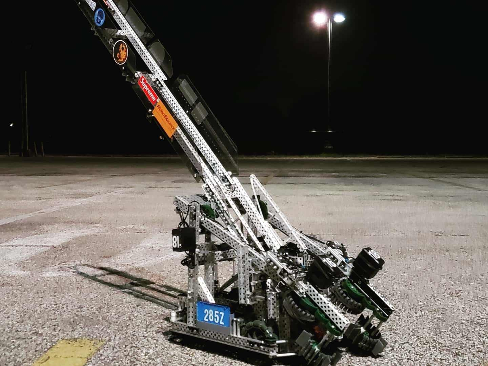
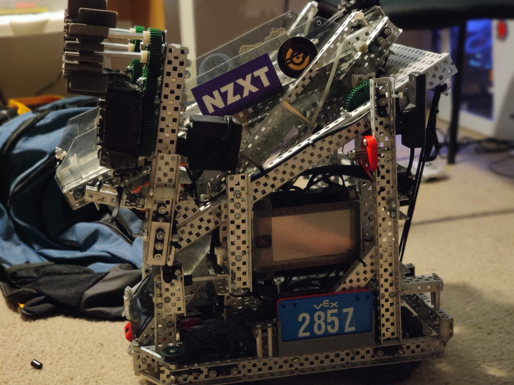
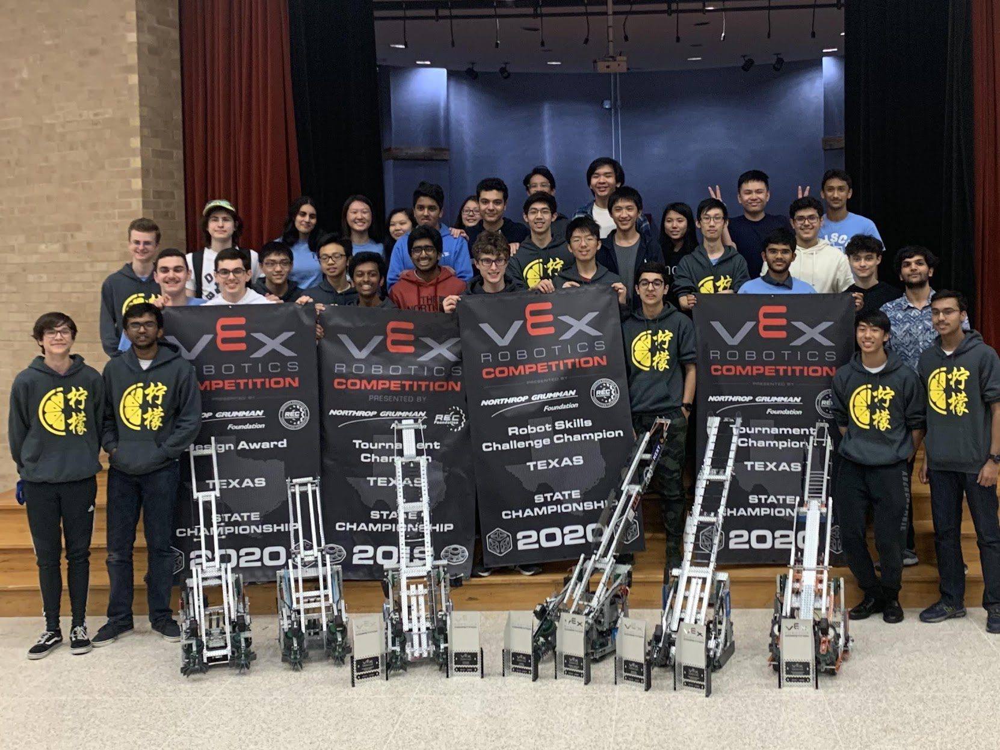

Carnegie Robotics Club · Sep 2019 – Jun 2020
Vex Tower Takeover Robot
A Vex robot that I led the design and development of. It could gather cubes from the field and stack them, as well as score cubes in raised towers.



Overview
In my senior year of high school, I participated in the Vex Tower Takeover competition, where the objective was to build a robot that could score as many cubes as possible in the goal zones. The small goal zones meant the cubes had to be stacked, which posed a significant challenge since all robots had to fit within an 18-inch cube at the beginning of the match. Towers with single-cube buckets would also add a point multiplier towards the color of a scored cube (there were three colors total).
This was my fourth year competing and my second year leading team 285Z. We were coming off a successful season, having won 13 awards and the Texas State Championship and advancing to the elimination quarterfinals at the world championship. I was a programmer, team leader, chief engineer, and driver, so I had a lot of responsibilities to juggle. I designed the majority of the robot with the help of a few friends, and it ended up being one of my proudest engineering accomplishments because of its mechanical complexity and performance.
Design
The robot had a total of eight motors: four for the drivetrain, two for the intake, one for the angler, and one for the lift. The angler tilted the tray so that the stack of cubes could be deposited in the goal zone. The lift was a simple two-bar (which the intakes were mounted on) that would raise a cube and score it in a bucket tower. The robot could consistently score a maximum of ten cubes in the zone.
The most complex part of the robot was the fold-out mechanism. Since all robots had to fit within an 18-inch cube at the start of the match, it was challenging to keep every mechanism, especially the tray, within the size constraints. To solve this, we built in four flip-out mechanisms: the tray, the anti-tip, the intakes, and the intake hard-stops.
The tray was composed of three stages that folded within each other to fit within size limits at the beginning of a match. The anti-tip, designed by a teammate, slid out on linear rails once the angler was activated using a rubber band system. The intakes were on joints and dropped down once the lift was activated, and each intake unit had a flip-out lock that prevented it from rotating once deployed.
Results
Our robot was a success. We won the skills championship at the state tournament along with the Think Award, and made it to the semifinals before losing to our sister teams (who went on to win the tournament). This qualified us for the world championship, which was unfortunately canceled, and marked our third year in a row as state skills champion. Throughout the season we won ten awards in total, including two tournament championships and two skills championships.